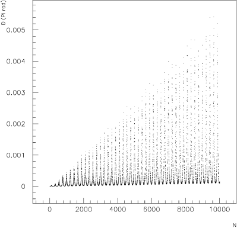
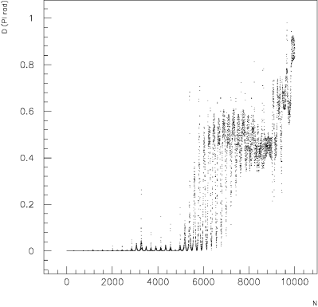
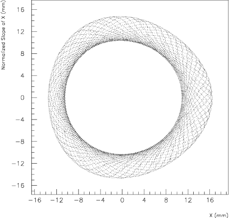
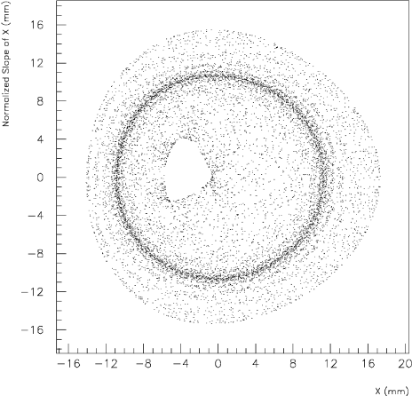
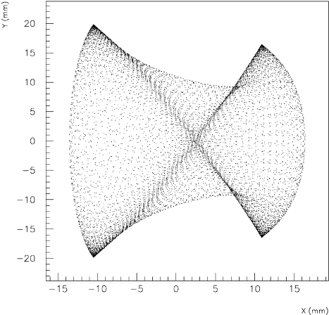
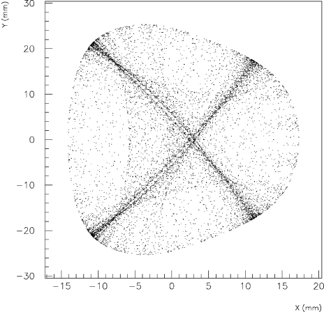

Appendix E Tracking Examples
A simple tracking example is shown with its input file ( E.1), its output file ( E.2) and some corresponding plots in ( E.3).
E.1 Input Example
For the description of the different input blocks see chapter 3.
E.2 Output Example
The preprocessing part is shown first.
Followed by the initial coordinates and the final coordinates for a regular (right side) and chaotic (left side) case.
Finally part of the post–processing for the two particles are shown (chaotic on the left and regular on the right respectively) and a summary of the post–processing is given.

E.3 Plot Example
In figure E.1 a typical example of the evolution of the distance in phase space is shown of a regular and chaotic particle. Figure E.2 and figure E.3 show the corresponding horizontal phase space and the physical phase space projections respectively. An example of the stroboscoped phase space is shown in figure E.4, where the motion in the chaotic case is beyond a “separatrix” in the four–dimensional phase space. Even in the FFT (figure E.5) one can see the effect of chaotic behaviour: it leads to a widening of the lines of the spectrum.

[5mm] 

[5mm] 

[5mm] 
[5mm]
[5mm]